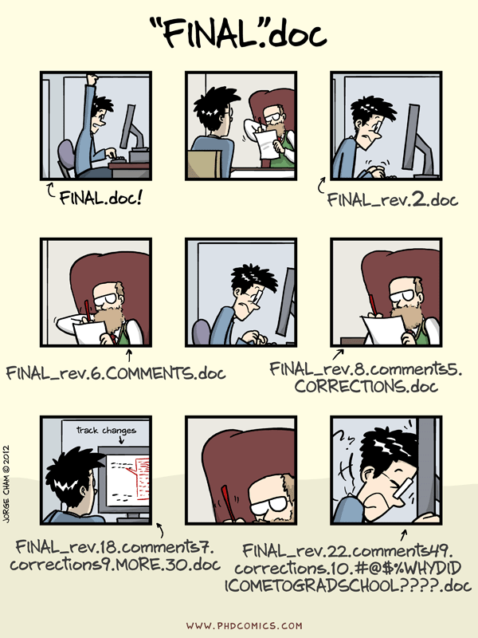
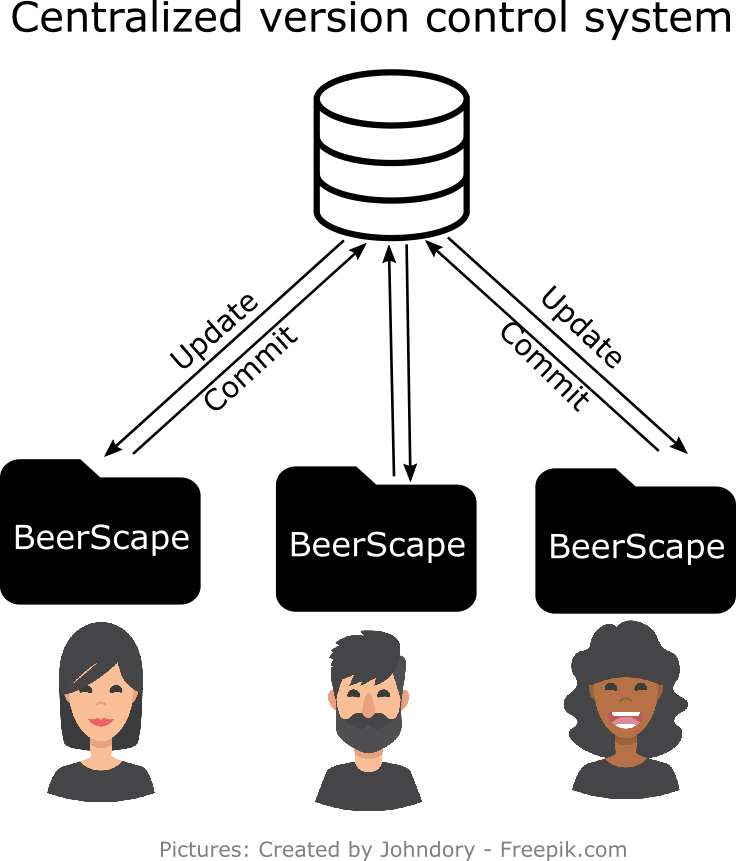
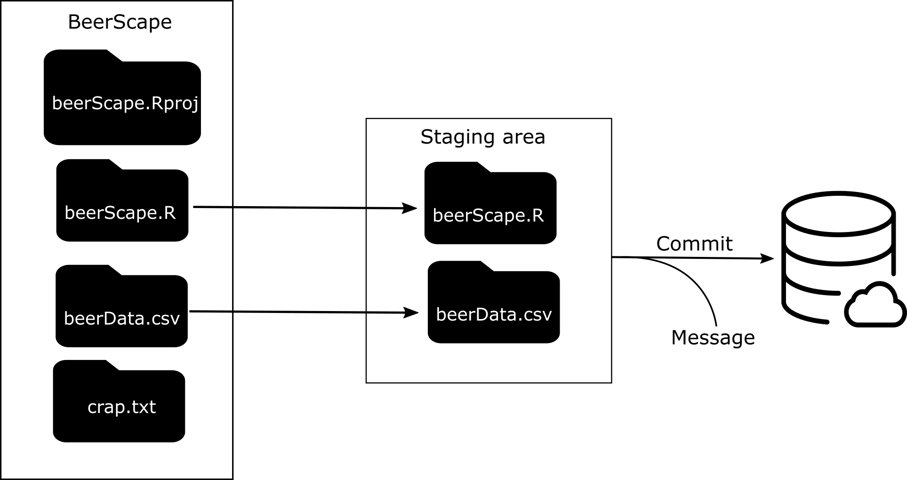
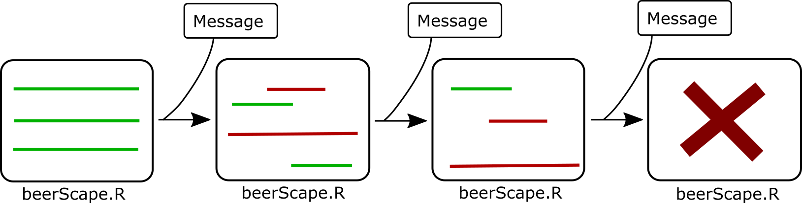
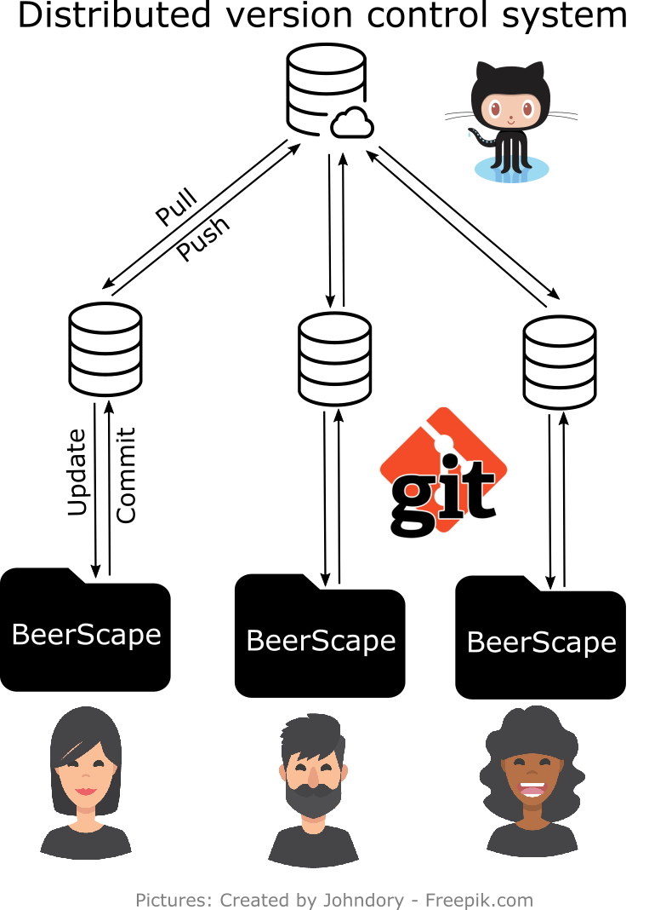

Introduction à git
un logiciel de gestion des versions





## Pourquoi utiliser git? 1. Bien gérer l'historique de vos fichers/documents* 2. Permet de facilement revenir en arrière 3. Facilite la collaboration et la diffusion de votre travail 4. ...
## Quand ne pas utiliser git? 1. Petits projets personels 2. Écriture collaborative (pas directement) 3. Facilite la collaboration et la diffusion de votre travail 4. ...
Un exemple
: plotly
Notre répertoire:
LaboScript